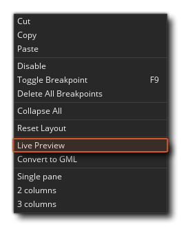
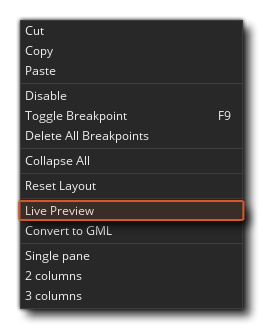
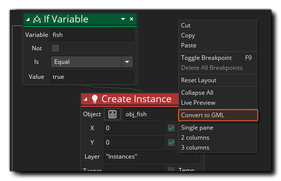
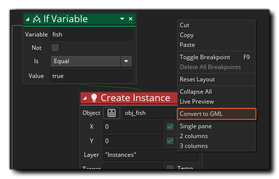
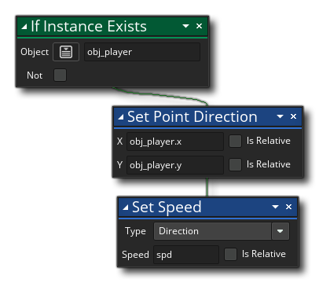

DnD™ 的另一个特性是你可以将其转换为 GML（GameMaker 语言）代码，并以这种方式查看使用动作时幕后的确切情况。然而，在将动作实际更改为 GML 之前，你可以先使用鼠标右键  菜单选项 实时预览 来 预览：
菜单选项 实时预览 来 预览：
这会打开一个新窗口： 
当你添加、更改或删除 DnD™ 动作时，GML 实时预览将更新以向你显示 “幕后” 创建的实际代码。 实时预览中的代码无法直接编辑，但你可以选择部分并将其复制以粘贴到 GML 脚本或代码动作。
如果你决定在看到预览后将 DnD™ 转换为代码，则可以通过在任何具有动作的事件工作区中单击鼠标右键  并选择 转成为 GML 再次完成此操作。
并选择 转成为 GML 再次完成此操作。
第一次执行此操作时，你将收到一条警告消息，指出这是 单向转换，因为你可以将动作转换为代码，但以后无法再将其转换回单个动作。点击 “确定”，这将为你执行转换。 
生成的代码将使用 {} 来分隔单个动作，你可以清楚地看到哪些动作与代码中的哪些函数或变量声明相关。如果 DnD™ 更复杂，那么代码也将如此，但是相同的一般规则适用，代码将按顺序与你编写 DnD™ 的顺序完全相同。 请注意，有时代码会添加额外的本地（临时）变量来存储将要使用的某些值，例如： 
将变成如下代码： 
这里的代码首先创建一个本地（临时）变量并将其设置为 false，然后检查实例是否存在并将局部变量设置为函数调用的返回值。 然后检查局部变量以查看它是 true 还是 false，如果为 true，则运行其余代码。
当学习使用拖放进行编程时，这可能是在后期使用 GML 的重要工具，但它绝不是强制性的，你仍然可以使用 DnD™ 制作出色的游戏！同样值得注意的是，虽然转换过程是一种方式，但在将动作转换为代码后，你 可以 通过使用代码编辑器中的右键菜单并选择 “转换成DnD™” 再次使用DnD™。 这会将先前创建的代码置于 执行代码 动作中，然后你可以像以前一样继续使用 DnD™：